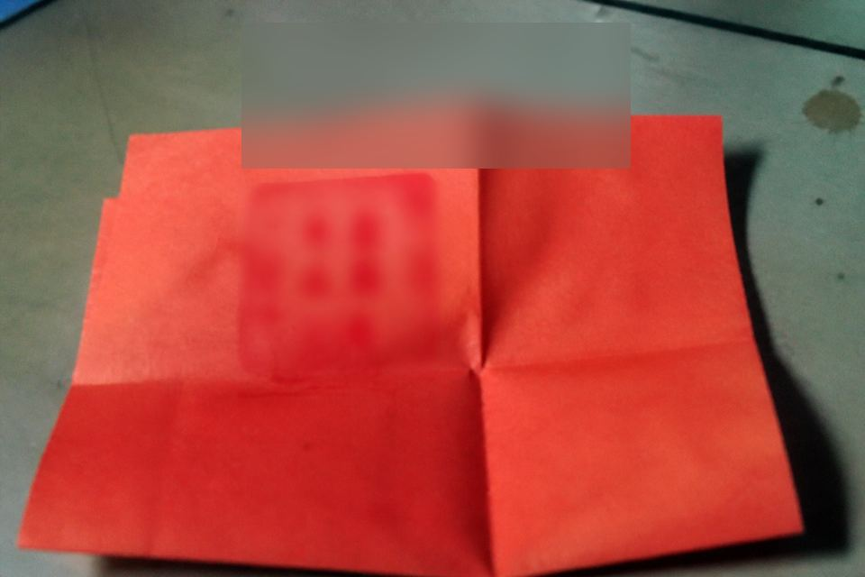

A bounce is cheaper than a false align

The marriage-paper window takes three columns: the current name on the household book; if a genealogy is required, it must match the current name or carry a separate written note; if a courtesy lodging ever entered the cabinet, there must be a release record. Missing one column: bounce.
Marriage papers need three columns aligned: household name, genealogy name, lodging-release.
Some people hear the shift lead’s “once names are aligned you can collect” as “you are already aligned.” Hearing already-aligned is hearing a condition as a fact.
Bounce slips often carry eight characters’ worth: genealogy name mismatch, lodging not cleared. Ugly to write. Fast to bounce. A false align costs more than an empty trip. It costs because notary will catch again.
Line page · not a wedding card
Some people take “separate written note” as an oral note also being fine. The license window does not take an oral note. It takes genealogy characters or a release record.
Notary is not under this notice’s jurisdiction. The notice can foresee a catch. It cannot stamp for notary. Foreseeing is enough for you to withhold tonight.